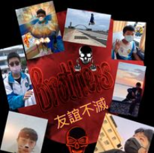

媽媽帶著我們做實驗
🏠Sweet Family🏠
我出生在一個幸福美滿的小康小家庭，一個提供我一切無論情感或物質所需的家。
我的父親在台塑企業工作，身為輪班職員的他，生活時間常常與我們錯開，四方的餐桌常常只坐了三個人，
但對他來說，養活一家四口是自己的責任。在我閒閒沒事時，他有時會與我閒談國學常識，有時候與我鑽研數學問題。
因為父親，我總覺得，學習從來不是一件苦差活，而是在汲取知識的同時，在「發現」的同時獲得樂趣。
母親在我生命中，理所當然地扮演了最重要的角色。我可以信誓旦旦的說，沒有母親，我的人生會走向一條完全相反的路。
在我出生時，腸病毒與SARS才剛剛震撼了全台灣，母親為此特地辭去了工作全心照顧我，
假如她沒有辭去工作，現在理當也有一番屬於自己的成就吧！然而，她令我了解到，
原來生命的意義不只是成就自己，而在於成全更多的人。
我有一個妹妹，與我僅相差一歲，不僅是我兒時的玩伴，也能憶起學習，相互依靠。

努力朝夢前進!
乘著夢想✈飛行的我 Flying with dream~
我喜歡理性地思考事情，如研究生活中的機械構造，執迷於學過或沒學過的數學問題，
也熱衷於理解這個世界是如何運作的。
我也喜歡放縱自己地感興趣尋找生活中的美，每天傍晚抬頭仰望天空，我總會沉醉於夕陽的豔麗與溫柔。
因此，我格外喜歡電腦資訊，因為在四方的螢幕框架，我能夠藉由一段又一段的程式碼，組織出無限廣闊的世界。
比如善用html與css，便能做出精美的靜態網頁；經過遊戲製作團隊的巧手，平凡無奇的文字便能化為可供玩家冒險的園地；
巧用程式語言，連電腦也能理解什麼是「美」！
我的性格有點軟弱，卻又執著於道德的對與錯，有時我會因為做了一件不知對錯的事而發愁。
但無論如何，我會盡力讓自己笑嘻嘻的面對每一天。
對我而言，夢想是極其重要的。
我身邊有只關心要如何度過今天的人，從不關心自己喜歡什麼、想要做什麼、以及想要成為什麼樣的人。
然而對我而言，活著的意義不在於過著重複的日子，而是讓每一個日子都在為未來的某一個時刻做準備。
因此，當面對困難的事的時候，有些人會因此退卻。但是因為夢想的使命感，
以及我「不會的事，做了就會了；不做的事，永遠都不會」的理念，我會努力去嘗試能幫助我完成夢想的事情。
努力朝夢前進!
📖Learning📖
國小的時候，我本來是一個害羞不愛說話的人。但是，經由參與大量的英語說故事比賽、國語演說、以及讀者劇場比賽，
培養了我在眾人面前說話的能力。
國中的時候，為了會考拚命的那段日子，則讓我了解到了時間管理的重要性，
尤且那年我們在疫情的衝擊下必須要在家線上上課，如果自制力不足，很容易就玩掉了國中生涯。
高中的時候，我開始製作科展與小論文，有些東西一開始看起來很難，可是在深入研究後，我才了我才了解到
「不會的事，做了就會了；不做的事，永遠都不會」的道理。